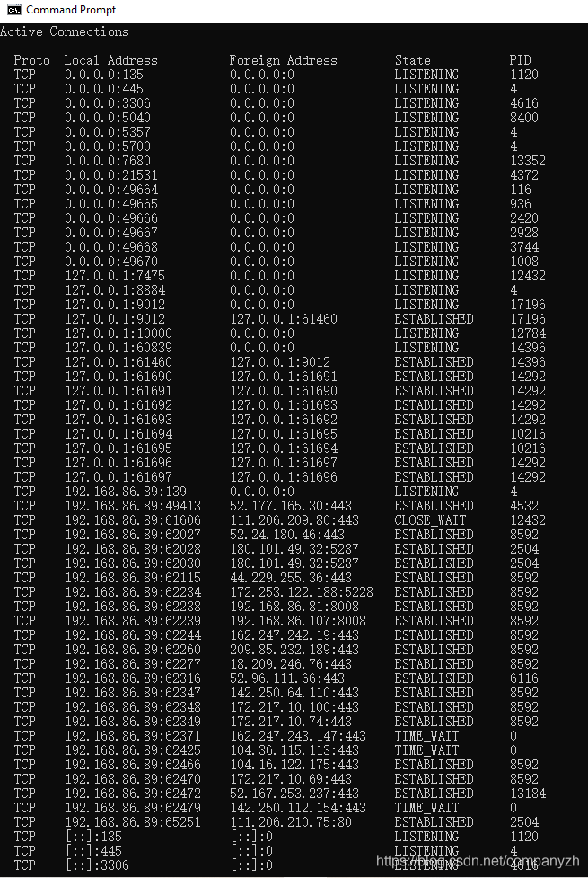
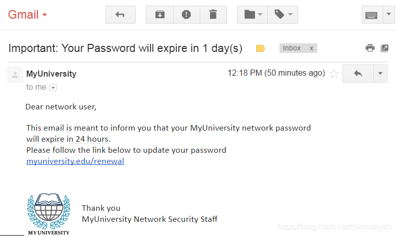

- 01 我应该站在谁的肩膀上 - OSI vs TCPIP模型.md.html
- 02 万丈高楼平地起- 物理层 + 数据链路层.md.html
- 03 OSI的灵魂就是我 - 网络层.md.html
- 04 要快还是要稳你说好了 - 传输层.md.html
- 05 是时候展现真正的技术了 - 应用层.md.html
- 06 重回小学课堂 - 二进制101.md.html
- 07 1+1 = 2吗？ - 二进制的计算.md.html
- 08 16进制又是个什么鬼？ - 16进制的讲解.md.html
- 09 我想有个家 - 什么是IP地址.md.html
- 10 我可是住二环的人 - IP地址的组成和分类.md.html
- 11 我已经没地方住了吗 - IPv6.md.html
- 12 向左还是向右 - IP路由.md.html
- 13 我能给你安全感 - TCP（一）.md.html
- 14 我那不为人知的秘密是什么 - TCP（二）.md.html
- 15 不问收没收到，就问快不快 - UDP.md.html
- 16 我为什么与众不同 - TCP高级篇（拥塞模型）.md.html
- 17 来，先看看我的家谱 - HTTP的身世.md.html
- 18 我都这么成功了，你却说我不行 - HTTP 的特点和缺点.md.html
- 19 我老了，让我儿子来吧 - HTTP2.md.html
- 20 稳重的大外甥 - HTTPS.md.html
- 21 HTTP的高级篇 - HTTPClient（Java）.md.html
- 22 想来我家，你自己查呀 - DNS.md.html
- 23 来的早，不如来得巧 - NAT.md.html
- 24 辛苦的邮政 - SMTP.md.html
- 25 你就是看不见我 - VPN.md.html
- 26 黑客的好帮手 - SSH.md.html
- 27 你可以得到我的心，却得不到我的人 - 物理安全设备.md.html
- 28 你怎么证明你就是你 - 身份验证和访问控制.md.html
- 29 我要怎么藏好我的考研资料 - 网络攻击（一）.md.html
- 30 我要怎么藏好我的考研资料 - 网络攻击（二）.md.html
- 31 如何保护我的考研资料 - 网络攻击防范.md.html
- 32 Linux网络安全 - 安全实战.md.html
- 33 结语.md.html
29 我要怎么藏好我的考研资料 - 网络攻击（一）
漏洞和漏洞利用
我们今天来开始看一下漏洞，我之前就有提到过，其实漏洞是到处都存在的。我现在以我的房子为例，从安全角度来看，我的房屋中也存在一些漏洞。谁家都有窗户对不对。就是那种玻璃窗，其中一些在房子前面，这些玻璃很容易损坏。每天都会有成百上千的人在我家前面走过，但是没有人利用该“漏洞“并为其创造漏洞利用程序。 那什么叫做漏洞利用（Exploits）？漏洞利用就是有个人走过来说：这房子很容易进入呀，然后拿起一块巨石，扔进我的窗户。这个时候，这个石头已经成为了一种攻击，对不对？石头利用了我的窗户是玻璃的的这种漏洞。因为我的窗户很脆弱。它是在内部和外部之间建立了屏障，但它也很脆弱，可以通过利用石头和坚硬的物体来加以破坏。在计算机上，这个道理是类似的。因此，每当你打开计算机并将其连接到网络时，Microsoft Windows这样的操作系统都会去尝试连接到其他Microsoft设备。另外，我们还可能在我们的工作站上运行其他软件应用程序，所以你会打开某些端口。
我们来看一个例子。来了解我们的工作站可能发生的某种类型的漏洞。我们会使用netstat来做演示。（netstat会显示你电脑上正在侦听的所有端口）。
netstat
我们来看一下netstat这个指令呀。Netstat是控制台命令,是一个监控TCP/IP网络的非常有用的工具，它可以显示路由表、实际的网络连接以及每一个网络接口设备的状态信息。 Netstat用于显示与IP、TCP、UDP和ICMP协议相关的统计数据，一般用于检验本机各端口的网络连接情况 （这是百度百科搬过来的） 常见参数
-a (all)这个大家应该都知道吧，一般-a都是显示所有。
-n 用数字来显示地址和端口号。
-o 显示与每个显示的连接关联的过程标识符（PID）
-t (tcp)仅显示tcp相关选项
-u (udp)仅显示udp相关选项
-l 仅列出有在 Listen (监听) 的服务状态
-e 显示有关你的网络连接的统计信息（已接收和已发送的数据包等）
复制
我在这里使用的是 netstat -ano, 出来的结果就是下图这样。

可能你咋一看会觉得这么多信息，是不是有一点不知所措，没惊慌呀。我们来一起看一下这个结果，先看一下TCP部分。还记得TCP的工作原理吗，前面已经分析的很详细了。这里就不多说了。我们来看一下第一行。第一个协议就没什么说的，指的就是TCP，就好像netstat上面的选项可以是只显示tcp。第二个是Local Address（本地地址）- 0.0.0.0:135。除了极少数例外，0.0.0.0指的是所有地址。这里指的是在此工作站上的任何本地地址，都在端口135上侦听。如果进入此工作站的数据包的源IP地址是网络接口适配器可以接受的任何地址，并且目标端口号是135，则此设备将允许进行该连接。它将接受SYN消息并以SYN-ACK消息进行回复。再看一下第三列也就是Foreign Address（0.0.0.0:0）它将针对在任何端口上运行的任何IP地址执行此操作。0.0.0.0是任何IP地址，此处0：0的端口号表示来自远程设备的任何端口号。所以，这里指的是我的工作站正在侦听端口135上的TCP SYN消息，并且这里的状态为LISTENING，我们只是在等待这里发生的连接。关联的进程ID就是最后一列的数字也就是进程ID1120。如果你打开windows的任务管理器，你可以找ID1120，你会看到这是一个windows的程序即-svchost.exe。这是Windows服务的主机进程。如果你感兴趣的话，你可以查一下所有Local Address是0.0.0.0:xxx的，你会发现，这里都是Windows进程。
当然我们也正在监听UDP连接，UDP没有三向握手，但是UDP在这里仍然有一些实用程序，而Windows具有监听各种进程的功能。我们也可以在此列表中创建不是基于Windows的进程，比如你可以做一个小实验，去网上下载一个TFTP服务器Tftpd64。这是一台小的TFT服务器，它可以免费下载，下载之后，你可以直接打开这个tftpd64.exe。然后你再次执行netstat -ano，在UDP部分你可以发现有一个新的连接在监听0.0.0.0:69，而69是TFTP使用的端口号。如果现在转到任务管理器中查看对应的PID，我可以关闭TFTP服务器。这当然不是最优雅的方法，但是，如果你遇到的是此处打开的某种类型的端口的问题，我可以直接执行“结束”任务，而该操作将关闭我的TFTP服务器。然后，当你再次发出netstat命令时，你会发现不再监听UDP端口69。那么，这与漏洞有什么关系呢？
漏洞
因为我的计算机正在侦听所有这些不同的端口号，每个端口号都有一些与之相关的软件服务，无论是Windows进程还是你（该计算机的所有者或管理员）运行的进程都像我刚刚举例的TFTP服务器。因此，这里所有侦听流量的网络过程背后，都有与之相关的软件。这意味着攻击者会将流量发送到这些设备，例如刚刚举例的端口135。攻击者可以做的是，将修改消息包头和消息数据部分中的少量信息。黑客可以修改一些小信息，以查看计算机将做出什么样的举动和反应。这就是黑客寻找软件中漏洞的过程，他们将这些奇怪的消息发送到计算机中，并试图引起某种有趣的响应。黑客在这里发送的是非标准消息，以查看计算机收到消息后会发生什么。最终可以做的是，如果黑客发送了足够多的消息，可以将某些消息发送到这些端口号中，并且它会以某种方式进行响应，这就表明该端口中存在漏洞。在此工作站上运行这些开放端口的软件。攻击者随后可以使用从端口135扫描中获得的信息。例如，黑客可以使用该信息重新编写一些新软件来利用端口漏洞135。
这些开放端口就像我最初介绍的那个例子里我家的窗户一样。窗口在内部和外部之间建立了一个障碍，你可以使用正确的语言打开窗口，使用正确的信息可以打开该窗口。但是，攻击者（黑客）在这里试图做的是试图找到一个弱点（比如找到我的窗户上有没有已经破碎的地方），以便可以创建（找到）合适的石头来破坏窗户。因此，当我们使用它时，我们总是可以看到打开的端口号和运行它的软件。运行该软件的软件通常是我们发现该漏洞的地方，攻击者可以用来创建漏洞利用它。因此，当Windows更新定期发布时，使用它们来修补后端的所有软件是非常重要的，因为这就像猫和老鼠一样。编写没有漏洞的软件几乎是不可能的，如果你将该软件放置足够长的时间不变的情况下，攻击者总会发现该漏洞并对其进行利用。这就是为什么我说这是一场猫捉老鼠的游戏，因为每次发现漏洞时，windows都会对其进行修补，这意味着攻击者现在无法使用该漏洞进行攻击。所以始终保持软件更新以防止这些攻击非常重要。因此，请确保对系统进行修补，以防止他人利用这些漏洞利用这些攻击来攻击你的系统。
钓鱼攻击
让我们看一下如何通过人作为攻击的媒介。这里存在的一种利用网络钓鱼的方法是网络钓鱼攻击，网络钓鱼攻击是指攻击者将大量电子邮件发送给各个电子邮件地址。也许他们从暗网或者其他的源头来获得这些电子邮件地址，黑客在这里做的是构建一条消息，然后将其发送给你。他们会向你发送此消息，并且通常情况下，这些信息会使你有些沮丧，这样你就不必关注需要注意的事情了（心里学的知识哦）。比如以下这个例子，说你的密码就要过期了，然后需要你来更新。单击此链接来更新你的信息。一般这个电子邮件看起来会相对合法，你会发现这个电子邮件会和正规的学校邮箱很接近。但是会是一个看上去非常接近的邮箱。当你点击那个链接的时候，你也会看到一个非常相似的网站，然后要求你输入用户名，密码。可能会说你无法登录，请重试。但是现在攻击者已经有了你的用户名和密码。

当然这个照片是我从网上下载的，一般来说这种攻击会发生在你的购物账户，比如我的东家Amazon，或者是京东等等。我经常收到的邮件是Netflix，然后要求你输入用户名和密码还有信用卡。这就是我们常说的钓鱼攻击。